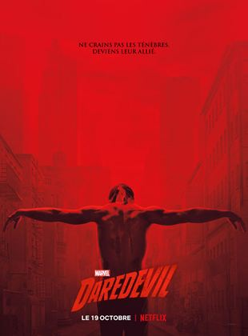

Fase Uno
Iron Man (2008)
La película cuenta la historia de Anthony Stark, un multimillonario industrial y genio inventor, que es secuestrado y obligado a construir un arma devastadora. En su lugar, utilizando su inteligencia e ingenio, Anthony construye una armadura de alta tecnología y escapa de su cautiverio.

El increíble Hulk (2008)
El doctor Bruce Banner sufre un accidente mientras trabaja con radiación gamma en un experimento del padre de su novia Betty, el general Ross. Tras el incidente, cada vez que su corazón se acelera demasiado Banner se transforma en una peligrosa criatura.

Iron Man 2 (2010)
Ahora que el mundo es consciente de que él es Iron Man, el inventor multimillonario Anthony Stark enfrenta la presión en todos lados para compartir su tecnología con los militares. Él se resiste a divulgar los secretos de su traje blindado, temiendo que la información caiga en las manos equivocadas.

Thor (2011)
El filme cuenta la historia de Thor, el príncipe heredero de Asgard, que es exiliado de su hogar a la Tierra. Estando allí, forma una relación con Jane Foster, una científica. Sin embargo, Thor debe detener a su hermano adoptivo Loki, que pretende convertirse en el nuevo rey de Asgard.

Capitán América: El primer vengador (2011)
Nacido durante la Gran Depresión, Steven Rogers creció como un joven frágil en una familia pobre. Horrorizado por el metraje de los nazis en Europa, Rogers se preparó para alistarse en el ejército. Sin embargo, debido a su fragilidad y enfermedad, fue rechazado.

Los Vengadores (2012)
Cuando un enemigo inesperado amenaza con poner en peligro la seguridad mundial, Nicholas Fury, Director de la agencia internacional para el mantenimiento de la paz, conocida con el nombre de S.H.I.E.L.D., necesita encontrar urgentemente un equipo que salve al mundo del mayor de los desastres.

Fase Dos
Iron Man 3 (2013)
Anthony Stark se enfrenta a un enemigo cuyo poder no conoce límites. Cuando Stark comprende que su enemigo ha destruido su universo personal, se embarca en una angustiosa búsqueda para encontrar a los responsables. Este viaje pondrá a prueba su entereza una y otra vez.

Thor: El mundo oscuro (2013)
Thor se enfrenta a un enemigo al que ni siquiera Odín y Asgard pueden hacer frente y deberá embarcarse en su viaje más peligroso y personal. En este viaje se reunirá con Jane Foster y deberá sacrificarlo todo para salvar el mundo.

Capitán América: El soldado del invierno (2014)
Uniendo fuerzas con Natalia Romanoff, el Capitán América lucha por desenmascarar la conspiración cada vez mayor mientras pelea contra asesinos profesionales enviados para silenciarlo a cada paso. Cuando el plan malvado es revelado, Steven Rogers y Natalia Romanoff piden la ayuda de un nuevo aliado: Samuel Wilson.

Guardianes de la Galaxia (2014)
Peter Quill es un forajido legendario abducido de la Tierra cuando era niño. Después de recuperar un antiguo artefacto, Quill debe reunir a un equipo de inadaptados cósmicos para evitar que un poderoso villano destruya la galaxia.

Los Vengadores: Era de Ultron (2015)
Ultrón es aterrador y fruto de un programa piloto dañado creado por Tony Stark y Bruce Banner para lograr la paz en la Tierra. Cuando la programación se volvió loca, Ultrón regresó a la vida con el objetivo de salvar al planeta eliminando su mayor amenaza: la humanidad.

Ant-Man (2015)
Dotado con la asombrosa capacidad de reducir su tamaño pero aumentar su fuerza, el experto ladrón Scott Lang deberá abrazar su héroe interior y ayudar a su mentor, el Dr. Hank Pym, a proteger el secreto que se esconde detrás de su espectacular traje de Ant-Man de una nueva generación de imponentes amenazas. Contra obstáculos aparentemente insuperables, Pym y Lang deberán planear y ejecutar un plan que salvará el mundo.

Fase Tres
Capitán América: Guerra Civil (2016)
Narra un encuentro secreto entre Iron Man y el Capitán América en la Mansión de los Vengadores, abandonada desde los acontecimientos de Vengadores Desunidos, en la cual ambos hablan intentando infructuosamente encontrar una solución pacífica al conflicto.

Doctor Stange (2016)
Dr. Stephen Strange cuya vida cambia para siempre luego de un accidente automovilístico que lo deja sin poder mover sus manos. Cuando la medicina tradicional falla, se ve obligado a buscar una cura y esperanzas en un lugar impensado: una comunidad aislada llamada Kamar-Taj. Rápidamente descubre que éste no es sólo un centro de recuperación, sino también la primera línea de una batalla en contra de fuerzas oscuras y ocultas empeñadas en destruir nuestra realidad. En poco tiempo, Strange, armado con sus poderes mágicos recientemente adquiridos, se ve obligado a elegir entre volver a su antigua vida de riqueza y estatus o dejarlo todo, para defender el mundo como el mago más poderoso del planeta.

Guardianes de la Galaxia Vol.2 (2017)
Relata las nuevas aventuras que vivirá el equipo mientras atraviesan el los confines del Cosmos. El anuncio dice lo siguiente: "Los Guardianes deben luchar para mantener unida a su nueva familia, mientras que desentrañan los misterios del verdadero padre de Peter Quill.

Spider-Man: Regreso a casa (2017)
Tras la experiencia de combatir junto con los Vengadores, Peter Parker vuelve a su vida escolar e intenta retomar su rutina como un adolescente normal. Sin embargo, pronto tendrá que recurrir de nueva cuenta a sus habilidades para enfrentarse al nuevo villano.

Thor: Ragnarok (2017)
El mundo de Thor está a punto de explotar en Marvel's Thor: Ragnarok. Su retorcido hermano, Loki, ha tomado el control de Asgard, la poderosa Hela ha resurgido para robar el trono y Thor es aprisionado en el otro lado del universo.

Black Panther (2018)
T'Challa es coronado rey de Wakanda luego de la muerte de su padre, pero su soberanía es cuestionada por un adversario que planea abandonar las políticas aislacionistas del país e iniciar una revolución mundial.

Vengadores: Infinity War (2018)
Arranca cuando los Vengadores y sus aliados continúan protegiendo al mundo de amenazas demasiado grandes para un solo héroe. Pero ahora ha surgido una peligrosa amenaza de la profundidad de las sombras cósmicas: Thanos

Ant-Man y la Avispa (2018)
Scott Lang, más conocido como Ant-Man, ha tenido que aceptar las condiciones de los Acuerdos de Sokovia después de unirse al bando de Capitán América en la guerra conocida como Civil War. Además de lidiar con las consecuencias de sus acciones como superhéroe, Lang tiene deberes como padre e intentará equilibrar su vida familiar y sus responsabilidades como Ant-Man. Pero pronto Hope Van Dyne y Hank Pym volverán a llamar a su puerta para requerir su ayuda. Ambos necesitan llevar a cabo una misión muy urgente: una villana conocida como Fantasma ha robado la tecnología de Pym y amenaza con destruir el planeta. Scott tendrá que volver a ponerse el traje de Hombre Hormiga y aprender a pelear junto a Hope, más conocida como la Avispa. Trabajando juntos podrán destapar importantes secretos de su pasado.

Capitana Marvel (2019)
Situada en el año 1995, la historia sigue a Carol Danvers, una piloto de la Fuerza Aérea de Estados Unidos, que se convierte en la Capitana Marvel después de que la Tierra haya quedado atrapada en el centro de un conflicto intergaláctico entre dos razas alienígenas.

Vengadores: Endgame (2019)
Después de los devastadores eventos ocurridos en Vengadores: Infinity War, el universo está en ruinas debido a las acciones de Thanos, el Titán Loco. Tras la derrota, las cosas no pintan bien para los Vengadores. Mientras Iron Man vaga en soledad junto a Nebula en una nave lejos de la Tierra, el grupo encabezado por Capitán América, Viuda Negra, Hulk y Thor deberá tratar de revertir los efectos de la catástrofe provocada por Thanos. Los Vengadores deberán reunirse una vez más para deshacer sus acciones y restaurar el orden en el universo de una vez por todas. Esta vez, contarán también con aliados como Ojo de Halcón y Capitana Marvel, además de Ant-Man, que presumiblemente podría haber estado atrapado en el Reino Cuántico. Juntos, se prepararon para la batalla final, sin importar cuáles sean las consecuencias.

Spider-Man: Lejos de casa (2019)
Peter Parker decide pasar unas merecidas vacaciones en Europa junto a MJ, Ned y el resto de sus amigos. Sin embargo, Peter debe volver a ponerse el traje de Spider-Man cuando Nick Fury le encomienda una nueva misión: frenar el ataque de unas criaturas que están causando el caos en el continente.

Fase Cuatro
Black Widow (2021)
Al nacer, la Viuda Negra, también conocida como Natasha Romanova, se entrega a la KGB para convertirse en su agente definitivo. Cuando la URSS se separa, el gobierno intenta matarla mientras la acción se traslada a la actual Nueva York.

Shang-Chi y la leyenda de los Diez Anillos (2021)
El maestro de artes marciales Shang-Chi se enfrenta al pasado que creía haber dejado atrás cuando se ve envuelto en la red de la misteriosa organización de los Diez Anillos.
Eternals (2021)
Los Eternos son una raza de seres inmortales con poderes sobrehumanos que han vivido en secreto en la Tierra durante miles de años. Aunque nunca han intervenido, ahora una amenaza se cierne sobre la humanidad.
Spider-Man: Sin camino a casa (2021)
Tras descubrirse la identidad secreta de Peter Parker como Spider-Man, la vida del joven se vuelve una locura. Peter decide pedirle ayuda al Doctor Extraño para recuperar su vida. Pero algo sale mal y provoca una fractura en el multiverso.

Doctor Stange en el Multiverso de la Locura (2022)
Continúan las aventuras del Dr. Stephen Strange y sus superpoderes en la secuela de Marvel "Dr. Strange".

Thor: Love and Thunder (2022)
Secuela de "Thor: Ragnarok" en la que el Dios del Trueno contará con Lady Thor como acompañante.

Las aventuras de los super heroes de marvel
La serie cuenta con el personaje de Peter Parker, también conocido como Spider-Man, quien siempre está buscando formas de ayudar a las personas. Él se une a otros héroes de Marvel como Black Panther y el Capitán América para luchar contra los supervillanos entre ellos el Doctor Octopus y Batroc The Leaper.

Hawkeye
Ojo de Halcón es una serie de Marvel que se centra en la historia del superhéroe Clint Barton que se encuentra en Nueva York junto a sus hijos tras los acontecimientos de Vengadores: Endgame, justo después del trágico Lapso.

What if?
Explora momentos clave del universo Marvel y plantea situaciones alternativas sobre algunos de los personajes más importantes de esas películas.

Loki
Loki es una serie que gira en torno al Dios del Engaño de Marvel y que retoma su historia justo después de cuando éste se hace con el Teseracto en Vengadores: Endgame, la última película de la Fase 3 del Universo Cinematográfico de Marvel.

Falcon y el soldado del invierno
Falcon y Winter Soldier, Falcon y el Soldado de Invierno en España, sigue la historia de Sam Wilson y Bucky Barnes tras los acontecimientos de Vengadores: Endgame, donde deben lidiar con el legado de poder llegar a ser el nuevo Capitán América.

Wanda Vision
Marvel Studios' WandaVision combina el estilo cómico de situaciones clásicas con el Universo Cinematográfico de Marvel en el que Wanda Maximoff y Visión, dos seres superpoderosos que viven su vida suburbana ideal, comienzan a sospechar que no todo es lo que parece.
Moonknight
Chiron, un joven afroamericano que vive en una zona conflictiva de Miami, tiene problemas para aceptar su homosexualidad. Mientras madura en un ambiente hostil, experimenta la alegría, la ira, el placer de la belleza, el éxtasis y el dolor. A medida que pasan los años, el joven se descubre a sí mismo intentando sobrevivir a diferentes situaciones.
The super hero squad shadow
En un enfrentamiento entre el Doctor Muerte y Iron Man, la "Espada del Infinito" que el villano trataba de utilizar para gobernar el mundo se rompe en fragmentos que se esparcen por Super Hero City. Para reunir los fragmentos, Doom se alía con todos los villanos a su alcance, pero Iron Man hace lo propio y reune al Super Hero Squad.

Powers
Cuenta la historia de James St. Patrick (Omari Hardwick), un traficante de drogas inteligente y despiadado con el nombre de calle "Ghost", que desea dejar el mundo criminal para perseguir intereses comerciales legítimos como propietario de discoteca.
Blade
Un hombre medio mortal, medio vampiro, capaz de andar bajo la luz solar, trata de vengar la muerte de su madre e impedir que los vampiros dominen el mundo. Estos han desarrollado una novedosa tecnología y están tratando de dar con un tipo sanguíneo concreto para así poder invocar a una deidad maligna que tendría un papel fundamental en sus planes para aniquilar a la raza humana.
The punisher
Cuando su esposa y su familia son asesinadas, Frank Castle comienza su venganza contra el crimen al actuar como juez, jurado y verdugo.

The defenders
Un abogado ciego, una mujer con súper fuerza, un multimillonario experto en artes marciales y un auténtico hombre de acero serán los encargados de detener a la villana Alexandra, que amenaza con destruir todo cuanto quieren.

The gifted
Dado que el gobierno está en proceso de aceptar una ley anti-mutantes, la familia se ve obligada a escapar y esconderse para evitar que sus hijos sufra daño alguno. No tardan en encontrar un grupo de mutantes que viven escondidos, y unirse a ellos es su única oportunidad para poder sobrevivir.

Hit monkey
gira en torno a un mono japonés, de mismo nombre, que es un experto tirador y tiene una gran agilidad y reflejos. Este mono se entrena para hacer un viaje de venganza oscuro y sangriento por los lugares más peligrosos de Tokyo.

Jessica jones
Jessica Jones es una mujer con superpoderes que tuvo una breve carrera como superheroína hasta un incidente en la que el villano Kilgrave hizo que matara a alguien. Después de ese incidente, se convirtió en una investigadora privada. Cuando Kilgrave reaparece, Jessica debe alzarse para detenerlo.

X-men
Los X-Men son seres que poseen increíbles y peligrosos poderes que derivan de extraordinarias mutaciones genéticas. Bajo la tutela del profesor Xavier, sus poderes son puestos al servicio del bien. Ahora deberán proteger al mundo de Magneto.
Agente carter
Un año después de los eventos de Capitán América: El Primer Vengador, la agente británica Peggy Carter está trabajando en análisis de datos y descifrado de códigos para la Reserva Científica Estratégica.

Cloak and dagger
Es la historia de Tandy Bowen (Olivia Holt) y Tyrone Johnson (Aubrey Joseph), dos adolescentes con orígenes muy diferentes, que se encuentran con la carga de sus nuevos súper poderes recién adquiridos, que están misteriosamente conectados entre sí.

Runaways
Es una serie de cómics de superhéroes publicada por Marvel Comics. La serie presenta a un grupo de adolescentes que descubren que sus padres son parte de una organización criminal conocida como "El Orgullo".
M.O.D.O.K.
M.O.D.O.K es una serie de animación para adultos que se centra en un supervillano presuntuoso con una enorme cabeza y un cuerpo enano. Este extraño personaje lucha por conservar el poder de su organización malvada y de su familia estricta.
Luke cage
Cuando un experimento saboteado le da super fuerza y una piel indestructible, Luke Cage se convertirá en un fugitivo en busca de reconstruir su vida en Harlem y que pronto se enfrentará a secretos del pasado y una lucha por el corazón de su ciudad.

Legión
Cuando Dios pierde la fe en la humanidad ordena a sus ángeles que comience el apocalipsis, pero el arcángel Miguel, que aún conserva la esperanza, se dispone a proteger a una camarera embarazada, para que su hijo preserve el futuro de la raza humana.

Dardevil
El abogado Matt Murdock, ciego a causa de un residuo radioactivo, se convierte por las noches en Daredevil, un héroe enmascarado que vigila las calles de la ciudad de Nueva York y lucha contra toda clase de injusticias.
Agentes of S.H.I.E.L.D.
S.H.I.E.L.D.' es una organización antiterrorista cuya principal misión es enfrentarse a las amenazas que asolan el mundo Marvel y la Tierra en general, desde supervillanos a organizaciones criminales.

El espectacular spider-man
Peter Parker es un adolescente de dieciséis años que sufre la picadura de una araña que le modifica genéticamente, convirtiéndole en un superhéroe. Peter tiene que encontrar un equilibrio entre sus alter-ego y la vida entre la escuela y los combates contra villanos como Vulture, Mysterio o el Doctor Octopus.
Los vengadores: los héroes más poderosos de la tierra
Cuando los supervillanos más peligrosos del mundo escaparon de la Bóveda, el Cubo, la Casa Grande, y la Balsa, cinco de los héroes más poderosos de la Tierra crean una alianza de lucha contra el crimen llamado Los Vengadores. El equipo está compuesto -inicialmente- por Hank Pym (que asume tanto sus alteregos Ant-Man como Giant-Man ), Hulk, Iron Man, Thor y la Avispa. Capitán América, Pantera Negra y Ojo de Halcón se unen a la lista convirtiéndose en miembros del equipo, que enfrentará las amenazas de invasiones alienígenas, mutantes, científicos, monstruos, robots y muchas más a lo largo de la serie.